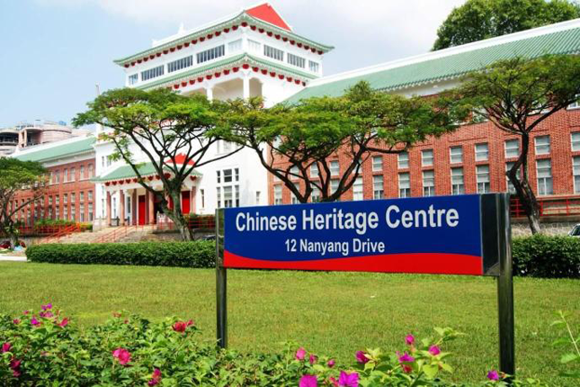
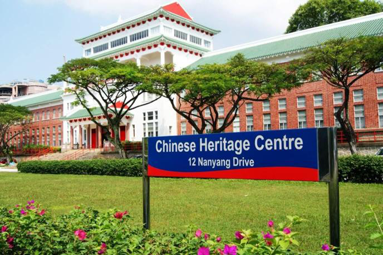

Yunnan Garden at NTU!
The Yunnan Garden is a lush park in campus,creating spaces for picnics and events while showcasing historical significance.
Yunnan Garden at NTU!
The Hive is an iconic building which displays NTU commitment towards the environment.


The Hive!
The centre includes a library, research centre and a museum with the building being a landmark reputed to be the only university created by the Chinese people living outside China
 

Chinese Heritage Centre!